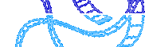
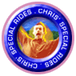

|  | |
|
DOWNLOADS CHRIS' SPECIAL ATTRAKTIONEN

|
|
|||
|
Name der Attraktion: Katie
Art der Attraktion: Holzachterbahn im Stil der Rasenden Maus
Beschreibung
Eine recht einfache und kompakte Bahn. Zu Anfang gibt es nach
der ersten Steigung ein sehr kurzes Gefälle, gefolgt von einer Reihe sanft
geschwungener Kurven, ehe als Abschluß zwei Abfahrten und eine letzte
Haarnadelkurve folgen.
|
|
|||
|
Name der Attraktion: Tamsen
Art der Attraktion: Holzachterbahn
Beschreibung
Eine große Holzachterbahn, die sehr eindrucksvoll aussieht und sich gut führt. Dem langen Anstieg folgen zwei lange Gefällestrecken und eine Anzahl Zickzack-Steilkurven durch die Holzkonstruktion hindurch. Die Strecke endet mit einer gemäßigten Helix.
|
|
|||
|
Name der Attraktion: Karen
Art der Attraktion: Holzachterbahn
Beschreibung
Eine kompakte Holzachterbahn, bei der alle 8 Gefällestrecken auf kleinstem Raum zusammengedr�ngt sind. Diese Attraktion macht Spaß und wird vielen Parkbesuchern gefallen.
|
|
|||
|
Name der Attraktion: Kathryn
Art der Attraktion: Stahlgerüst-Achterbahn
Beschreibung
Eine Miniachterbahn auf Stahlgerüsten, die auf ein l�ngliches
schmales Stück Land paßt. Der Anstieg erfolgt in einer Spirale und führt zu
einem ersten Sturz über etwa 16 m. Es folgen 7 weitere Gefällestrecken
und rasante Drehungen ohne Veränderung des Niveaus.
|
|
|||
|
Name der Attraktion: Louise
Art der Attraktion: Stahlgerüst-Miniachterbahn
Beschreibung
Eine Miniachterbahn mit Stahlgerüsten, auf der zwei
konkurrierende Bahnen fahren. Die Züge fahren an zwei verschiedenen
Stationen ab, einen kurvenreichen Anstieg hinauf, wobei sie sich voneinander
entfernen. Bei der ersten Abfahrt rasen sie beinahe direkt aufeinander zu,
dann folgen enge Drehungen und ein zweites Gefälle, bis sie sich schließlich
beim dritten Sturz wieder begegnen.
|
|
|||
|
Name der Attraktion: Shona
Art der Attraktion: Stahlgerüst-Achterbahn
Beschreibung
Eine sehr kompakt gebaute Mini-Achterbahn auf Stahlgerüsten.
Es gibt hierbei keine geschlossene Fahrstrecke. Der Zug wird statt dessen
rückwärts eine steile Steigung hinaufgezogen, beschleunigt dann bei der Abfahrt
und saust durch die Station die restliche Strecke entlang. Eine Steigung am
anderen Ende sorgt dafür, daß der Zug schließlich rückwärts wieder zurückführt.
|
|
|||
|
Name der Attraktion: Sarah
Art der Attraktion: Loren-Achterbahn
Beschreibung
Eine kompakt gebaute Achterbahn mit Loren. Die Station liegt
weit über dem Bodenniveau, so daß der Zug direkt aus der Station in die erste
enge Kurve fällt, auf die eine Holperstrecke folgt. Nach der Steigung durchfahren
die Züge noch ein paar längere Gefälle und hohe Steilkurven. Zum
Schluß gibt es einen schnellen Korkenzieher nach oben.
|
|
|||
|
Name der Attraktion: Liz
Art der Attraktion: Stahlgerüst-Achterbahn
Beschreibung
Eine Stahlgerüst-Achterbahn ohne Looping - entworfen
für alle, die nicht über Kopf fahren mögen. Auf die Steigstrecke folgt eine
Reihe sanfter schneller Abfahrten und Steilkurven. Zum Schluß gibt es
einen Korkenzieher.
|
|
|||
|
Name der Attraktion: Kellie
Art der Attraktion: Stahlgerüst-Achterbahn
Beschreibung
Eine ausgesprochen kompakt angelegte Stahlgerüst-
Achterbahn ohne volle Drehungen. Die Steigung hat zwei Abschnitte,
was die Betriebskosten erhöht, wodurch die Bahn aber auf eine sehr
kleine Grundfl�che paßt. Entworfen wurde sie für Fahrgäste, die nicht
den totalen Nervenkitzel wollen. Es gibt keine steilen Abfahrten, aber
jede Menge sanfte Kurven und geneigte Strecken.
|
|
|||
|
Name der Attraktion: Victoria
Art der Attraktion: Aufgesetzte Achterbahn
Beschreibung
Eine aufgesetzte Achterbahn, die erst gebaut werden kann,
wenn die speziellen Streckenelemente Looping, Korkenzieher und Halblooping
nach entsprechender Forschungsarbeit entwickelt wurden. Eine strapaziöse
Attraktion mit 2 vollen Drehungen, überraschenden Richtungswechseln,
kurvigen Abfahrten und schnellen Steilkurven.
|
|
|||
|
Name der Attraktion: Brooke
Art der Attraktion: Korkenzieher-Achterbahn
Beschreibung
Eine große Korkenzieher-Achterbahn aus Stahl ohne
ganze Drehungen. Auf eine sehr steile, gewundene Abfahrt folgen
sanftere Wellen und Gefälle, die von schnellen Steilkurven unterbrochen
sind. Am Ende gibt es einen engen Korkenzieher.
|
|
|||
|
Name der Attraktion: Ingrid
Art der Attraktion: Korkenzieher-Achterbahn
Beschreibung
Eine sehr große Helix-Achterbahn aus Stahl, die erst gebaut
werden kann, wenn die F&E-Abteilung den Halblooping entwickelt hat. Nach
einer langen Steigstrecke und zwei ersten Abfahrten taucht der Zug bis unter
die Station und wird dann wieder durch die zwei Loopings bis über die Station
hinweggeführt. Danach folgen zwei weitere Serpentinen und eine 720-Grad-Helix
bis zur Station hinauf.
|
|
|||
|
Name der Attraktion: Margaret
Art der Attraktion: Aufgehängte Achterbahn
Beschreibung
Eine aufgehängte (schwingende) Achterbahn. Da die Station
höher liegt als das Bodenniveau, ist der Höhepunkt dieser Attraktion, wenn
der Zug nach der zweiten Talfahrt unter der Station hindurch und mit hoher
Geschwindigkeit eine große 'S'-Kurve führt, wobei die Wagen dicht über dem
Boden schwingen.
|
|
|||
|
Name der Attraktion: Melanie
Art der Attraktion: Unterbau-Achterbahn
Beschreibung
Eine Unterbau-Achterbahn, die erst gebaut werden kann,
wenn die Streckenelemente Halblooping und Korkenzieher entwickelt wurden.
Nach einer sehr steilen und unregelmäßigen ersten Abfahrt gibt es ein
zweites, gerades Gefälle und eine Steilkurve. Anschließend fällt der Zug in
zwei gedrehte Loopings, auf die ein senkrechter Looping folgt, der zu den
letzten Biegungen und Kurven führt, unter der Station hindurchtaucht und per
Korkenzieher bis zur Station zurückführt.
©1999, Chris Sawyer. Alle Rechte vorbehalten. ©1999 Hasbro Interactive, Inc.
|
|